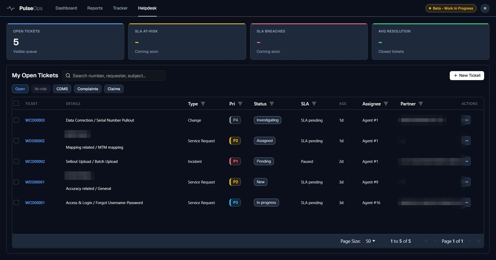
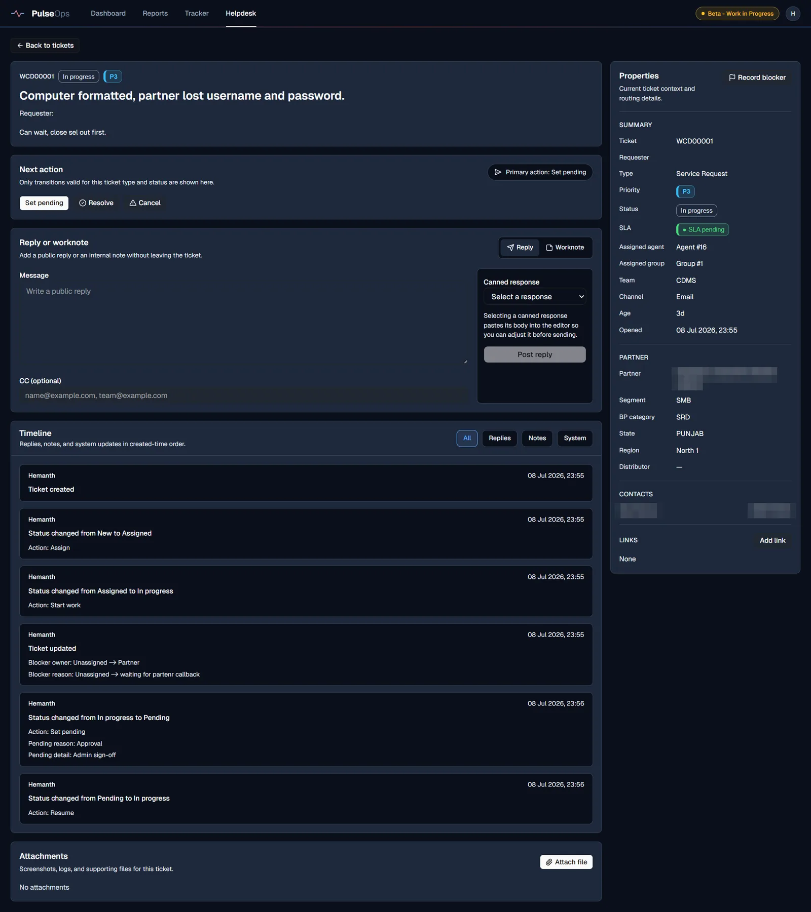
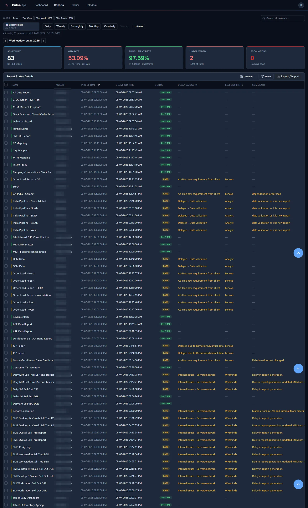

- My role
- Everything except most of the typing: requirements, data model, SLA rules, UX decisions, testing, deployment, operations
- Status
- In daily production use by my support team
- Stack
- React 19 · Express 5 · TypeScript · PostgreSQL 16 · Docker · JWT
- Scale
- 34 tables · ~61,600 lines of TypeScript · ~2,750 automated tests · 664 commits
- Reliability
- Live since 18 May 2026 — no incidents to date
- Built with
- AI-assisted development (Claude Code + Codex, BMAD method) — how I build
- Links
- Live instance (login required — employer system) · source is employer property and not public; happy to walk through the architecture in an interview

The problem
My team supports Lenovo's channel-data workflow for partners across India: tickets, escalations, and a daily schedule of 50–80 partner reports that must land on time. The tooling was a legacy complaints portal everyone avoided, plus email and Excel trackers. That meant no SLA visibility, no ownership trail, manual delivery tracking, and leadership asking for numbers nobody could produce without an evening of spreadsheet work.
Constraints
- One person, evenings. I work the queue by day; there was no engineering team behind this.
- Production from day one. Real partner data and real SLAs — a broken migration isn't a learning experience, it's an outage.
- Simple over clever. Every piece uses boring, proven patterns (raw SQL, Express, server API + SPA client) because I have to operate and debug it myself.
What I built
- SLA engine with business-hours math. Response and resolution targets come from a priority matrix; the clock runs in business minutes (a PostgreSQL function), pauses automatically when a ticket waits on the customer or on data, and resumes on reply. States: within → at-risk → breached, with the at-risk threshold configurable per SLA.
- Ticket state machine. Only valid transitions for each ticket type and status are offered — an agent can't skip from New to Resolved without the steps between. Every transition writes a system event to the ticket timeline.
- Role-based access. Analyst, Manager, and Admin roles with JWT + refresh-token auth, scoped queries, rate limiting, and an audit log.
- Report-delivery tracker. The daily report schedule with on-time-delivery and fulfillment rates, delay categories, responsibility attribution, and per-analyst workload — fed automatically by ReportSense.
- Leadership dashboards. Day's pulse, per-analyst summaries, capacity planning in effort-minutes, and exception ownership — the numbers that used to take an evening now load in a click.
- Excel in, Excel out. Bulk import with validation and fuzzy matching for legacy data; date-range exports for anyone who still wants a workbook.


Decisions worth explaining
- Raw SQL instead of an ORM
- I need to read, explain, and debug every query — and practising SQL against my own schema is part of the point. An ORM would hide exactly the layer I most need to understand.
- SLA pause as first-class state, not a report-time adjustment
- Pause timestamps and accumulated pause milliseconds live on the ticket; the effective deadline is computed from them. That makes "why is this ticket not breached?" answerable from the data, which matters when leadership audits a number.
- Business-minutes function in the database
- Due-time math lives in one tested PostgreSQL function used by inserts, updates, and backfills alike — not re-implemented in three places that would drift.
- Beta rollout behind a label
- The helpdesk module shipped to the team marked "Beta — Work in Progress" while the legacy flow stayed available, so adoption was earned, not forced.
Validation
~2,750 automated tests across 270 colocated test files — unit tests for the SLA math and state machine, integration tests against a real PostgreSQL instance for the API. Migrations ship with backfills (e.g. recomputing SLA due times for existing tickets) and were rehearsed on a sanitized copy of production data before running for real.
Outcome
- In daily production use by the team — the legacy complaints portal and Excel trackers are retired from the workflow.
- ~30 minutes a day of manual tracking eliminated, with leadership KPIs available on demand instead of on request.
- Every ticket now has an SLA state, an owner, and an auditable timeline.
- SLA-compliance and resolution-time metrics are accumulating now that the system measures them — real figures will replace this sentence as they mature.
What's next
Escalation tracking (the dashboard tile already reserves the spot), SLA at-risk/breach rollups on the helpdesk dashboard, and an automated daily summary email. The public demo instance with synthetic data is being prepared so you can explore all of this yourself.
All projects